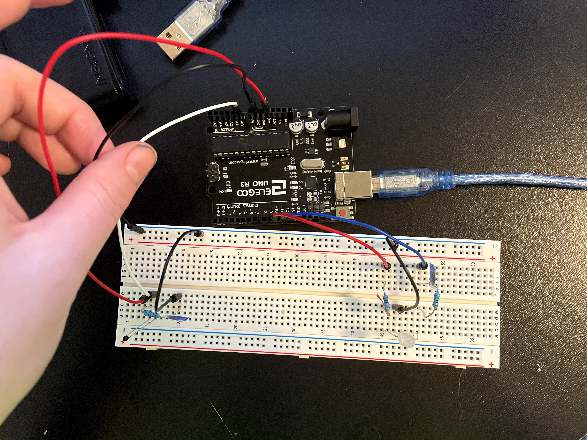

Assignment 3: Input Output!
An LED is blue when the thermal sensor is cold, and red when the thermal sensor is warmed up.
I used Calibration by Davit A. Mellis (2008) as a base for my code.
The Schematics
I have a thermal sensor connected to a 100 ohm resistor and being read by the A0 pin. The multicolor LED has its red and blue LEDs connected to a 220 ohm resistor and 100 resistor, respectively.
Voltage from arduino: 5 volts. LED voltage drop: 1.8 volts for red, and 3.3 for blue. Max current: 30 mA
V=IR
Red: Rmin = V/I = (5-1.8)/.03 = 106.67 ohm minimum resistance
Blue: Rmin = V/I = (5 - 3.3)/.03 = 56.67ohm minimum resistance
Therefore, the 220 ohm resistor for the red and the 100 ohm resistor for the blue is best!
I like using the maximum current (30 mA) in my calculations, so I know without a doubt that any larger resistor is safe.
As for the thermal sensor, I decided that a 100 ohm resistor would be good, since I thought a large resistor limits the range of values. Even with a small resistor, I got values ranging from 7 to 12 when I checked my reading of the thermal sensor. if we take 10 to be the middle value, we can find the approximate resistance the thermal thermometer is giving out. don't forget that the thermal sensor output (a range of 0-1023) has to be converted to voltage (a range of 0-5).
Vout = Vin (R2/(R1 + R2))
10*(5/1023) = 5 (100/(R1 + 100)
10/1023 = 100/(R1+100)
10/1023 = 10/((R1 + 100)/10)
1023 = (R1 + 100)/10
10230 = R1 + 100
10130 = R1
Once I did the calculations, I realized that I made a logical error. Since R2 is so small in comparison to my resistor, the output value is also goign to be small, and going to have a limited range. If I used had used a resistor that had been closer, such as a 1K resistor, the range would have been larger, resulting in a smoother transition of lighting when the temperature changed. After all of my documentation, I changed out the 100 resistor for a 1000 resistor and got a significantly smoother transition. However, the 100 ohm resistor still worked.
The Wiring

For the thermal sensor, red connects to power, black to ground, and white is for reading values. For the light, the red wire connects to the red LED, and the blue wire connects to the blue LED, with black to ground.
The Code
//constants:
const int sensorPin = A0; // pin that reads the thermal sensor
const int ledPinRed = 10; // pin that the red LED is attached to
const int ledPinBlue = 11; // pin that the blue LED is attached to
const int bufferVariable = 10; // An edge buffer, so more values are at the maxium and minimum
// EX: if buffer is 10, it increases the sensor min by a tenth and decreases the sensor max by a tenth
// variables:
int sensorValue = 0; // the sensor value
int sensorMin = 1023; // the minimum sensor value
int sensorMax = 0; // the maximum sensor value
int bufferAmount = 0; // the calculated buffer
void setup() {
pinMode(13, OUTPUT); //make pin 13 an output
digitalWrite(13, HIGH); //turn it on, to show that the calibration is happening
while (millis() < 5000) { // during the first 5 seconds:
sensorValue = analogRead(sensorPin); // read the sensor
if (sensorValue > sensorMax) { // if the reading is a new max
sensorMax = sensorValue; // make the reading the new max
}
if (sensorValue < sensorMin) { // if the reading is a new min
sensorMin = sensorValue; // make the reading the new min
}
}
bufferAmount = (sensorMax - sensorMin)/bufferVariable; // take the range of the max-min, divide it by the buffer amount
sensorMax = sensorMax - bufferAmount; // decrease the max by the buffer
sensorMin = sensorMin + bufferAmount; // increase the min by the buffer
digitalWrite(13, LOW); //turn off pin 13 to show calibration is over
}
void loop() {
sensorValue = analogRead(sensorPin); // read the sensor
sensorValue = map(sensorValue, sensorMin, sensorMax, 0, 255); //map the sensor reading to the anolog range for LED
sensorValue = constrain(sensorValue, 0, 255); // then constrain the value to the LED range, in case it's negative or over 255
analogWrite(ledPinRed, sensorValue); // turn the red LED on in scale with the sensor
analogWrite(ledPinBlue, 255 - sensorValue); //turn the blue LED on in the opposite range of the sensor
}
The Gif

The thermal sensor reads just room temperature and the LED is blue. Then, when I touch the thermal sensor, it heats up, and the LED transitions to red.